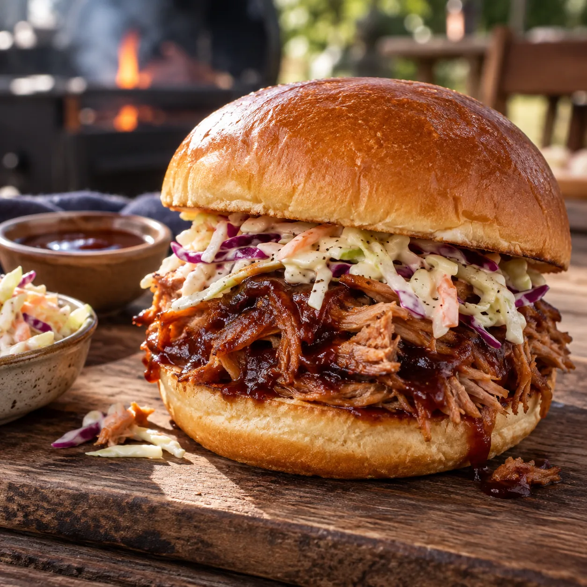

Unsere Klassiker · Burger
Pulled Pork Burger
Saftiges Pulled Pork, cremiger Coleslaw und BBQ-Sauce im weichen Burger-Bun

Der Burger für alle, die Pulled Pork am liebsten mit cremigem Coleslaw, rauchiger BBQ-Sauce und einem weichen, kurz angerösteten Brötchen genießen.
Zutaten
Ca. 600–800 gfertiges Pulled Pork
Ca. 200 gColeslaw
Nach GeschmackJuli's BBQ Sauce
EtwasButter oder Öl für die Brötchen
Zubereitung
- Das vorbereitete Pulled Pork langsam erwärmen. Bei Bedarf etwas Fleischsaft oder Juli's BBQ Sauce unterheben, damit es schön saftig bleibt.
- Die Burger-Buns halbieren. Die Schnittflächen dünn mit Butter oder Öl bestreichen und in einer heißen Pfanne oder auf dem Grill kurz goldbraun anrösten.
- Das Pulled Pork großzügig auf den unteren Brötchenhälften verteilen. Nach Geschmack BBQ-Sauce darübergeben und mit Coleslaw belegen.
- Die oberen Brötchenhälften aufsetzen und die Burger direkt servieren. Übrigen Coleslaw und BBQ-Sauce einfach dazustellen.
Vorbereitung
Das Fleisch braucht deutlich länger als der fertige Burger. Bereite deshalb zuerst das Pulled-Pork-Grundrezept zu. Burger-Buns, Coleslaw und BBQ-Sauce lassen sich ebenfalls gut vorbereiten.